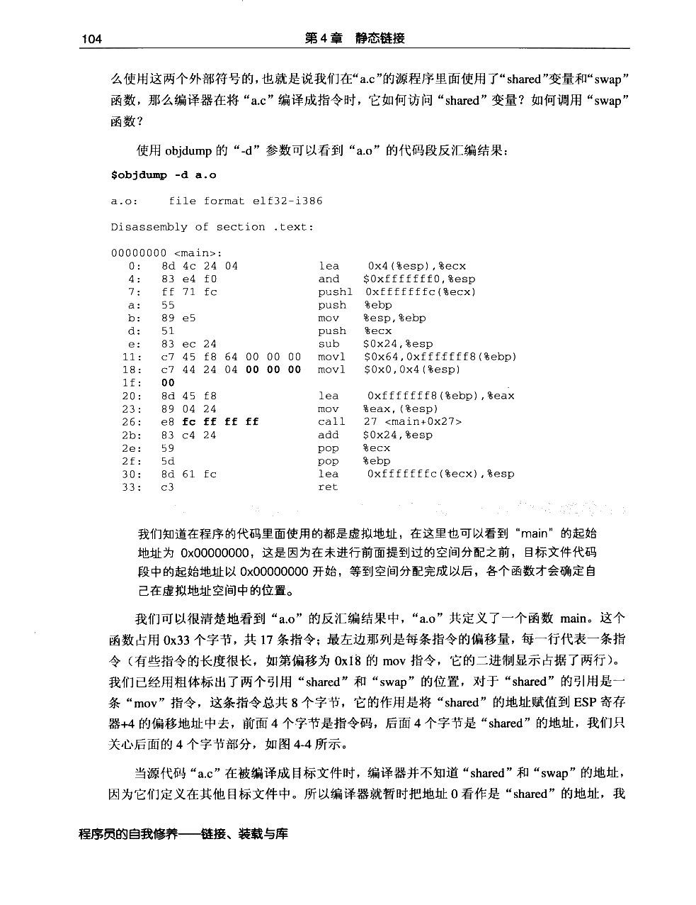
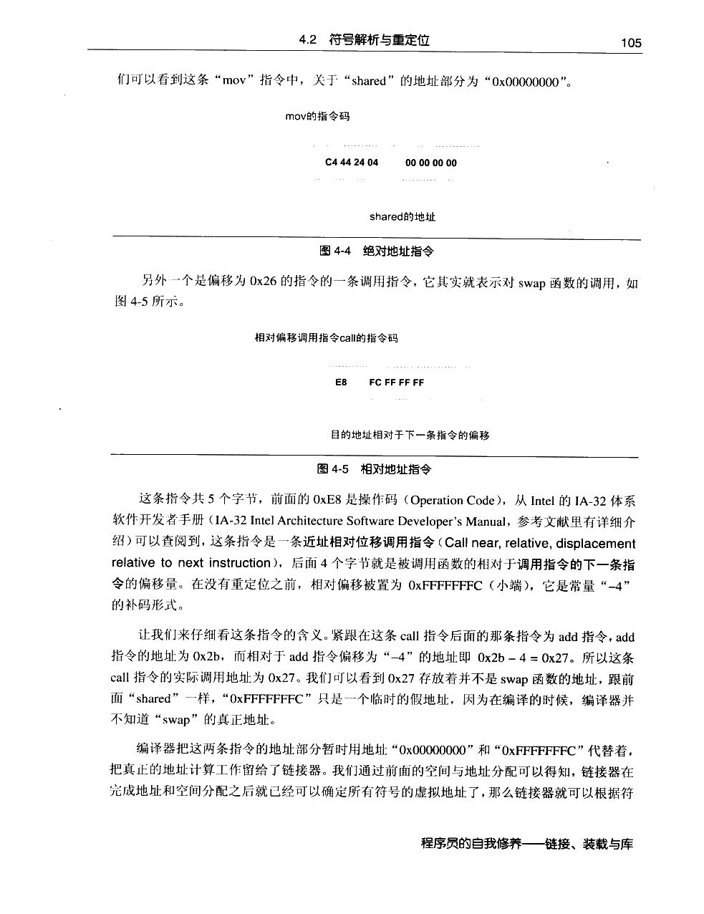
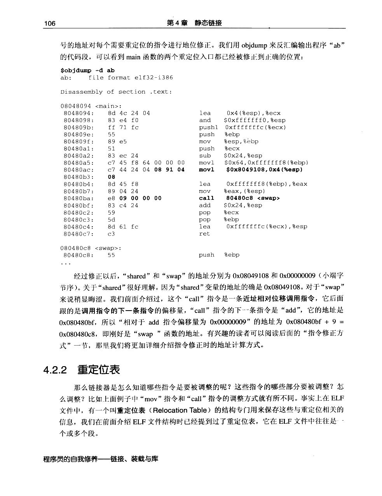
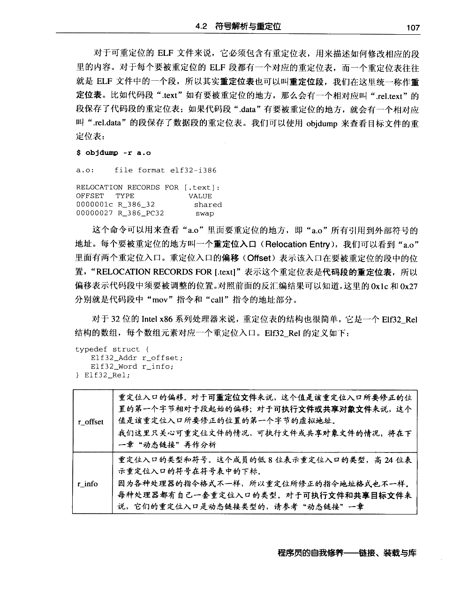
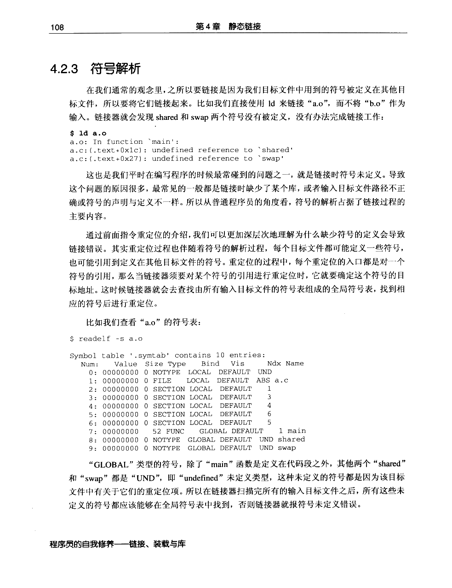
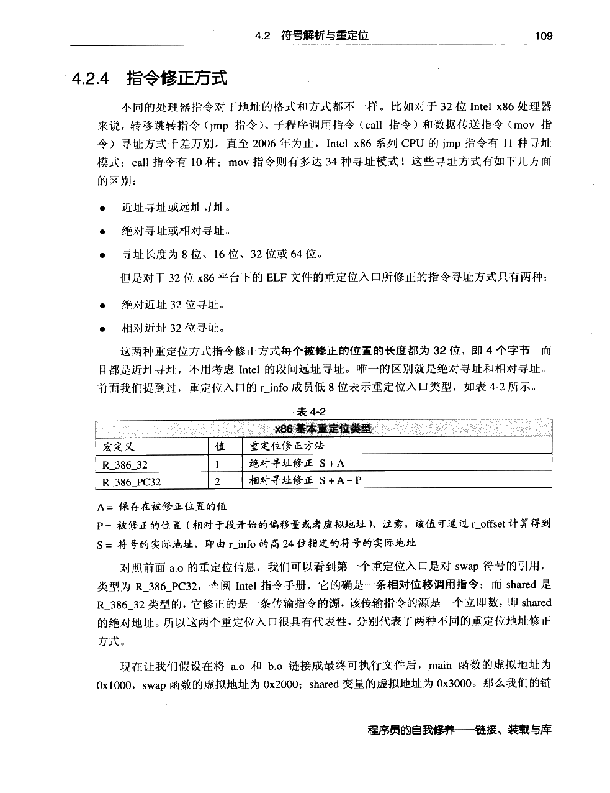
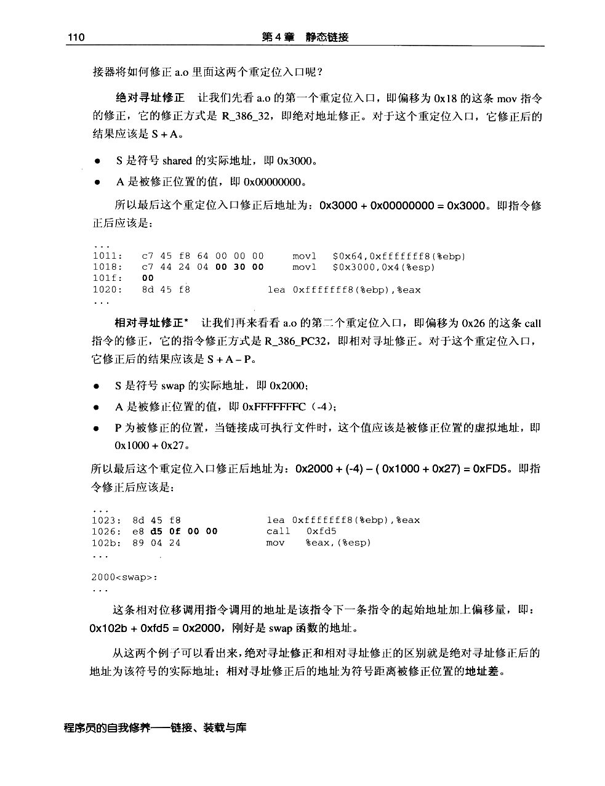

← 返回正文4.2 符号解析与重定位
PDF 第 126 页 · 书内第 103 页 PDF 第 127 页 · 书内第 104 页
PDF 第 127 页 · 书内第 104 页
PDF 第 128 页 · 书内第 105 页
PDF 第 129 页 · 书内第 106 页
PDF 第 130 页 · 书内第 107 页
PDF 第 131 页 · 书内第 108 页
PDF 第 132 页 · 书内第 109 页
PDF 第 133 页 · 书内第 110 页